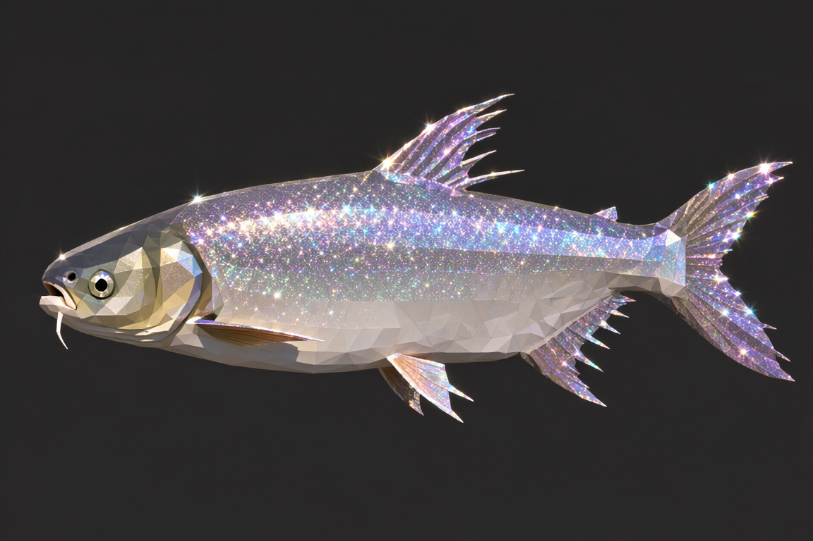
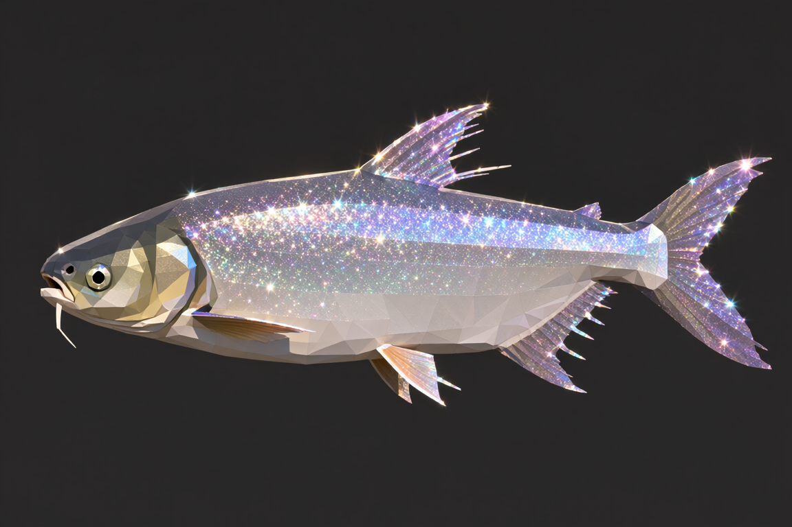
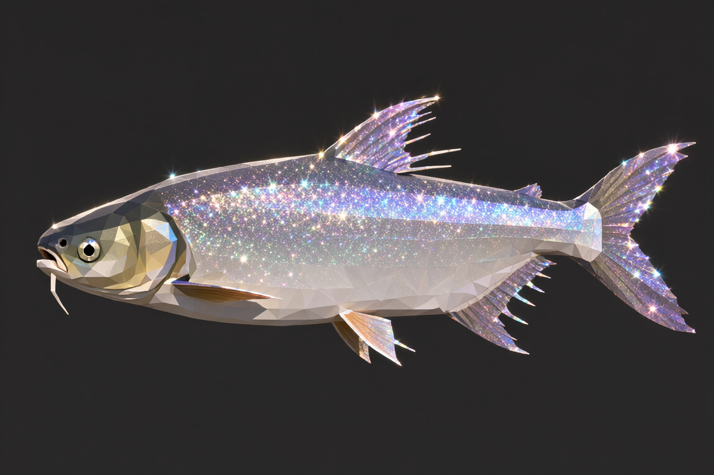
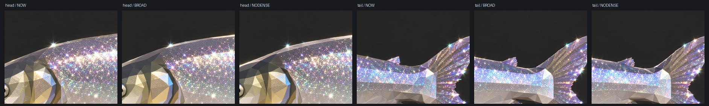

NOW · 现状：
密度 2.39
dense triangular polygon mesh密度 2.39

dense triangular polygon mesh
larger clearly separated flat facets,
no dense mesh, no busy micro-facets

| 候选 | GEOM 那句 | 面片密度 | 1:1 观感 |
|---|---|---|---|
| NOW（旧） | dense triangular polygon mesh covering the body… | 2.39 | 尾部一片小碎面 ← 你要避免的 |
| BROAD ✅ | larger clearly separated flat facets, no dense mesh, no busy micro-facets | 2.04 | 块面清楚、不再碎；代价是密度更低 |
| NODENSE | 只去掉「密集网格」+「相邻面色调微差」 | 2.13 | 比 NOW 好、但尾部仍偏碎 |
large / minimal 曾把密度拉到 1.5）。所以它被写成只挂闪光档一档的显式例外，
并加了机制检查：GEOM_COARSE 只许出现两处、不许含「密集」措辞、
例外多挂一档就报红（三处注入都反向验证过）。
别把这条"顺手改回去"。
gen-art.py 的 GEOM_COARSE 换成 NODENSE 那句
（Finely faceted low-poly surface, crisp visible polygon edges, flat shading per facet,
no texture, no gradients.）即可 —— 一行。但按 1:1 看，尾部仍会偏碎。docs/images/card-ab/geom-ab-*.png；口径记在
docs/画风与颜色标准.md §7.4；步数（黄金/闪光 = 35）也在同一节。